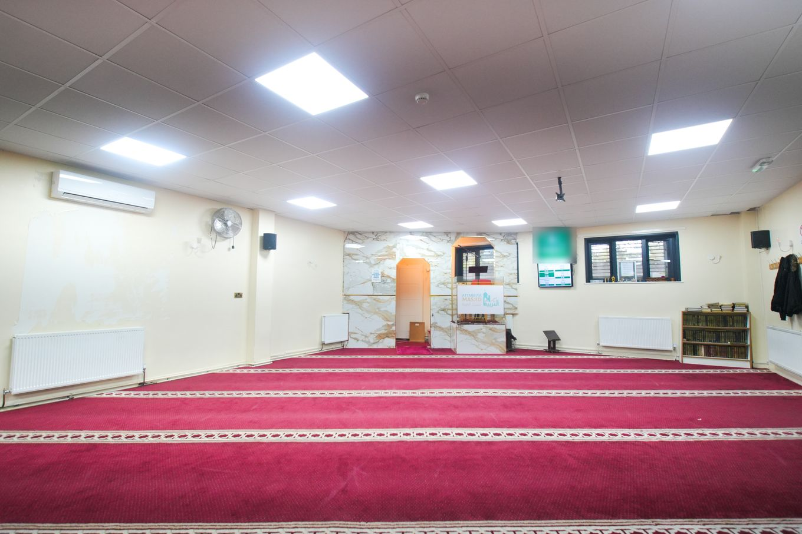
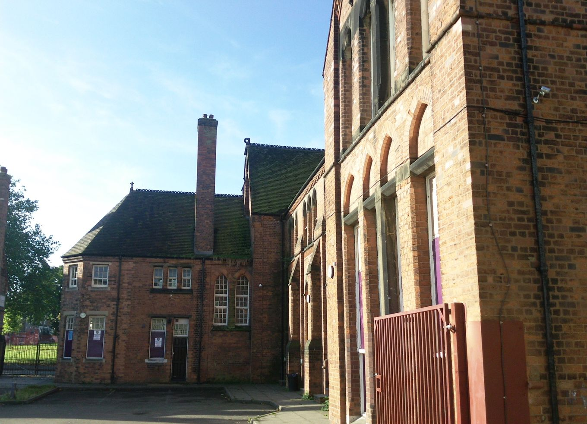
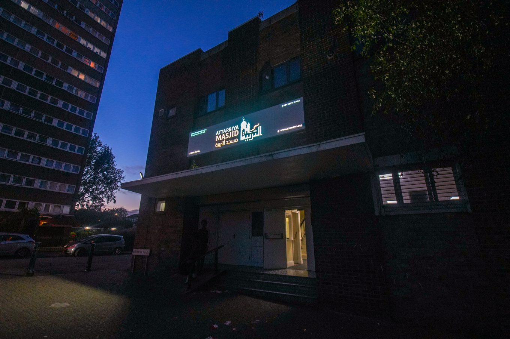

Nechells, Birmingham
مسجد التربية
Attarbiya Masjid
A place of worship, learning and community on Revesby Walk, serving Nechells and the surrounding neighbourhoods.
Today's Prayer Times
Full TimetableLoading prayer times…
About the masjid
Attarbiya Masjid is a registered charity at 2 Revesby Walk in Nechells. The five daily prayers are held in congregation, with one Jumu'ah every Friday, and the building is also home to Madrasah Al Furqan, the masjid's own madrasah for children aged 6 and over.
The charity was founded in 2006, and the masjid first opened in 2007 at the Garrison Centre on Garrison Lane. It has been on Revesby Walk since 2019, when it took on the former Vauxhall Sports and Social Club and set about turning it into a masjid. For adults there are evening lessons, day classes and winter conferences, many of them recorded, and Al Kissaii, the masjid's youth programme, runs youth nights for teenagers.
- صلاةSalah Five prayers a day in congregation, and Jumu'ah on Fridays. Prayer times
- علمKnowledge Madrasah Al Furqan for children, lessons and conferences for adults. Recordings
- جماعةCommunity Youth nights, a community evening before Ramadan, and Eid prayers together. Events

Inside the masjid


Madrasah Al Furqan
The masjid's own madrasah, where children learn to read the Qur'an in three groups, with classes for older boys and men and for women too, six days a week, in the same building and run by the same charity. Find out what the madrasah teaches and when, and register your child through the parent portal.


What's on
Every Saturday and Sunday after Maghrib: Riyadh al-Salihin with Sheikh Abdullahi Harshi, for brothers.
Events
All eventsLoading events…
Latest recordings
All recordingsLoading recordings…

Our story
Before Revesby Walk, there was Garrison Lane.
- 2004Al Furqan starts teaching at Garrison Lane
- 2006The charity is founded to serve Bordesley Green
- 2007The masjid opens at the Garrison Centre
- 2019The charity takes on the old Vauxhall Sports and Social Club
- NowFive prayers a day, the madrasah, and more
Some of our history is on record. Much of it lives only in the memories of the people who were there. We are putting it together, gaps and all.
Your Masjid, Your Support - A Continuous Reward
Help us keep the masjid running and growing. Give once, or set up a monthly Direct Debit from £5 a month as an ongoing sadaqah jariyah.
DonateVisiting
- Address
- 2 Revesby Walk, Nechells, Birmingham B7 4LG
- Entrances
- Facing the masjid, brothers enter on the right and sisters on the left. There is a prayer area for sisters.
- Opening
- The masjid opens for Fajr and closes shortly after it, then is open from Dhuhr until shortly after Isha. The times move with the prayers: see prayer times.
- Access
- The entrance is step-free. The masjid has no car park of its own; there is parking on the streets nearby.
- Jumu'ah
-
One Jumu'ah every Friday. The khutbah is usually in Arabic and English, sometimes in English only.
For this Friday's time, see prayer times.
- Contact
- WhatsApp, 07929 242914 or info@masjidatarbiya.org. Parents can register a child for the madrasah.
